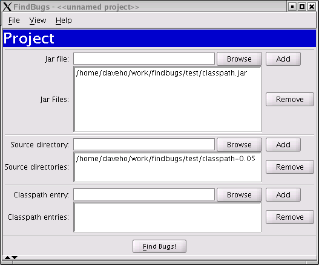
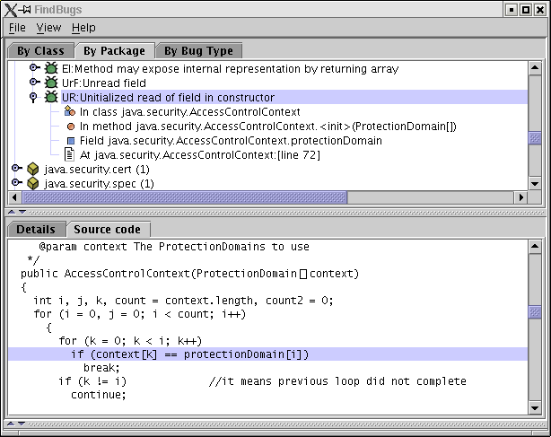

@RELEASE_DATE@, Version @VERSION@
FindBugs is a program to find bugs in Java programs. It looks for instances of "bug patterns" --- code instances that are likely to be errors.
This document describes version @VERSION@ of FindBugs. This is an early release of the tool, so you may find problems with it. We are very interested in getting your feedback on FindBugs. Please visit the FindBugs web page for the latest information on FindBugs, contact information, and support resources such as information about the FindBugs mailing lists.
To use FindBugs, you need a runtime environment compatible with Java 2 Standard Edition, version 1.4 or later.
Changes since version 0.5.0:
Features that are planned for future releases:
FindBugs has two user interfaces, a graphical interface and a command line interface.
To use the graphical interface, execute the command
java -jar $INST_DIR/lib/findbugsGUI.jar [options...]where "$INST_DIR" is the directory in which you installed the FindBugs distribution.
Several command line options are available.
-plastic option makes the user interface use the Plastic
look and feel from jgoodies.com. To use this
option, download the plastic look and feel, and copy the plastic.jar
file into the $INST_DIR/lib directory. The Plastic look and feel more
closely resembles common desktop GUI environments than does Swing's default
Metal look and feel.
-debug option causes the FindBugs program to print
the names of classes and the analyses being performed to the standard
output descriptor.
To start a new project, choose the "File:New Project" menu option. You will see a dialog which looks like this:

Use the "Browse" button next to the "Jar file" text field to select a Jar file containing java classes to analyze for bugs. You may add multiple Jar files. Optionally, you can add the source directories which contain the source code for the Jar files you are analyzing. This will enable FindBugs to highlight the source code which contains a possible error. Another optional step is to add additional Jar files or directories as classpath entries. You should do this if the Jar files you are analyzing have references to other classes which are not included in the analyzed jar files and are not in the standard runtime classpath. Some of the bug pattern detectors in FindBugs make use of class hierarchy information, so you will get more accurate results if the entire class hierarchy is available which FindBugs performs its analysis.
Once you have added all of the Jar files and source directories, click the
"Find Bugs!" button to analyze the classes contained in the Jar files.
Note that for a very large program on an older computer, this may take quite a while (tens of minutes).
A recent computer with ample memory will typically be able to analyze a large
program in only a few minutes. For example, on a 1.8 GHz Pentium 4 Xeon, we can
analyze the rt.jar file (26 MB) from Sun's JDK 1.4.2-beta in about 6 minutes.
In any case, a dialog will report the progress of the analysis.
When the analysis completes, you will see a screen like the following:

The top pane of the window shows the bug tree; this is a hierarchical representation of all of the potential bugs detected in the analyzed Jar files. The tabs allow you to browse by class, package, or bug type.
When you select a particular bug instance in the top pane, you will see a description of the bug in the "Details" tab of the bottom pane. In addition, the "Source code" tab of the bottom pane will, for some kinds of bugs, show the program source code when the potential bug occurs. In the above example, the bug is an access to an uninitialized field in a constructor. The source code window highlights the line containing the problematic access.
You may use the "File:Save project" menu option to save the current lists of Jar files and source directories. A saved project may be loaded with the "File:Open project" menu option. Note that the analysis results are not saved, so you will have to run the analysis again. (Saving results may be added to a future FindBugs release).
To use the command line interface, execute the command
java -jar $INST_DIR/lib/findbugs.jar [-sortByClass] file1.jar file2.jarwhere "$INST_DIR" is the directory in which you installed FindBugs. You can list any number of Jar files (or plain class files). The -sortByClass option may be used to sort the reported bug instances by class name. The results will be sent to the standard output file descriptor.
FindBugs is free software distributed under the terms of the Lesser GNU Public License. You can find the latest version of FindBugs, along with its source code, from the FindBugs web page: http://www.cs.umd.edu/~pugh/java/bugs.
FindBugs was written by William Pugh and David Hovemeyer as part of research on the Java programming language at the University of Maryland Department of Computer Science.
This product includes software developed by the Apache Software Foundation (http://www.apache.org/). Specifically, it uses the Byte Code Engineering Library.
Some of the icons used in the FindBugs graphical interface were taken from the NetBeans and KDE projects.